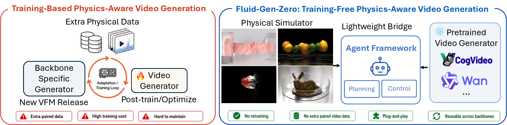
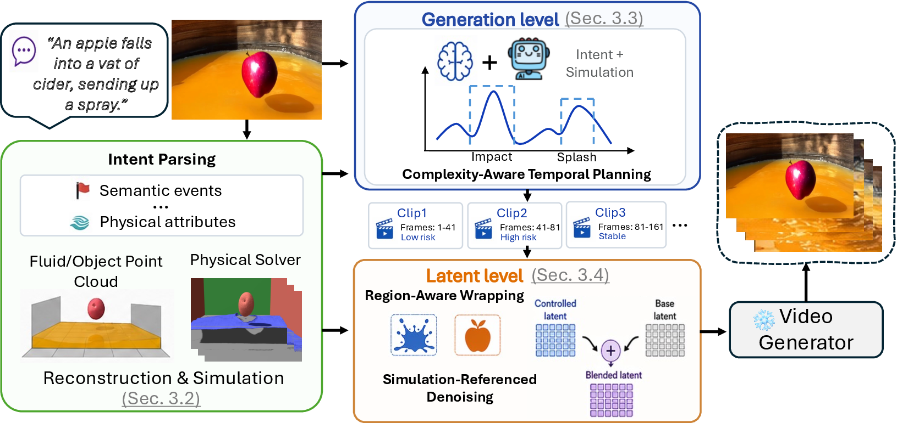

We present Fluid-Gen-Zero, a training-free framework for physics-aware fluid video generation that decouples physical reasoning from appearance synthesis. Our key insight is to delegate motion dynamics to a physics simulator while preserving the appearance modeling capacity of pretrained video generators.
We bridge these two domains through a two-level agentic workflow: generation-time planning, where a rule-grounded VLM agent parses intent, observes simulation evidence, and organizes generation into physically feasible clips, and latent-space guidance, which injects simulation-derived signals into denoising via region-aware latent wrapping. This plug-and-play design is compatible with modern video models and improves both physical alignment and visual quality without training.


Each case compares the physics simulation with generated videos from Fluid-Gen-Zero and representative baselines.
A fluid-object interaction where the generated motion follows the simulated contact and splash dynamics.
A ship scene with fluid motion and object movement constrained by the corresponding simulated rollout.
The simulator provides explicit dynamics while the pretrained generators supply photorealistic appearance.
An additional fluid-object interaction illustrating the consistency of physics-aware control across scenes.
@inproceedings{fluidgenzero2026,
title = {Fluid-Gen-Zero: Grounding Pretrained Video Generators in Physics without Training},
author = {Huang, Hong and Liu, Yuqiu and You, Chenyu and Martin, Daniel F and Zou, Chuhang and Chen, Wuyang},
booktitle = {arXiv},
year = {2026},
}